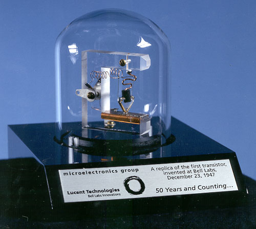
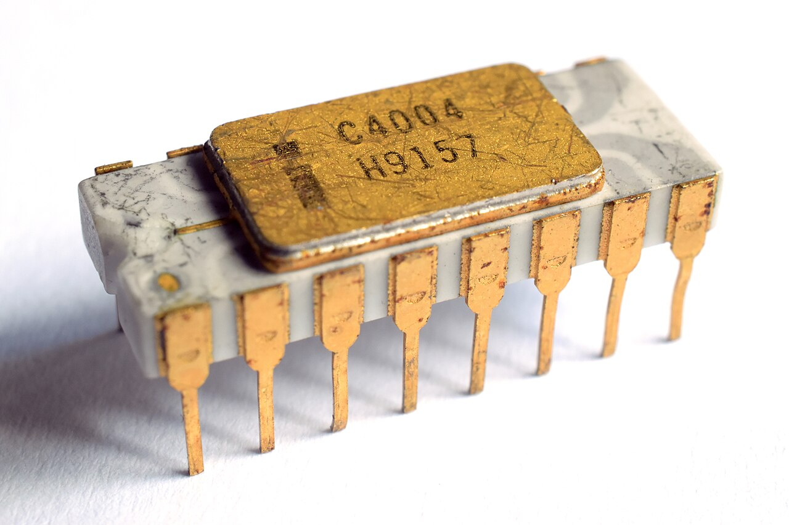

تصور کن بخوای یک کامپیوتر مدرن بسازی، اما برای هر بخش از مدار مجبور باشی از قطعاتی بزرگ و پرمصرف استفاده کنی.
هرچه تعداد قطعات بیشتر بشه، فضای موردنیاز، گرما و دشواری نگهداری هم میتونه افزایش پیدا کنه.
برای توسعه کامپیوترها، فقط به ایدههای بهتر نیاز نداشتیم؛ باید راه بهتری برای ساخت قطعات الکترونیکی پیدا میکردیم.
ورود ترانزیستور
ترانزیستورi یکی از مهمترین قطعات الکترونیک مدرنه.
در بسیاری از کاربردها، ترانزیستور میتونه مانند یک کلید الکترونیکی کنترلشونده عمل کنه. در کاربردهای دیگه هم برای تقویت سیگنال استفاده میشه.
ترانزیستورها نسبت به لامپهای خلأ معمولاً کوچکتر و مناسبتر برای ساخت مدارهای فشرده بودن.

البته این به معنی حذف فوری همه فناوریهای قدیمی نبود؛ تغییر نسل فناوری در عمل تدریجی اتفاق افتاد.
از یک ترانزیستور تا میلیونها قطعه
یک ترانزیستور بهتنهایی کامپیوتر نمیسازه.
قدرت اصلی زمانی ظاهر میشه که تعداد زیادی قطعه در ساختارهای منظم کنار هم قرار بگیرن.
مدار مجتمعi۱ این امکان رو فراهم کرد که چندین قطعه الکترونیکی در یک ساختار فشرده ساخته بشن.
بعدها پیشرفت فناوری ساخت نیمهرسانا باعث شد تراشهها پیچیدهتر بشن و ریزپردازندهها نقش مهمی در توسعه کامپیوترهای شخصی پیدا کنن.
ریزپردازنده بخش مهمی از عملیات پردازشی رو در یک تراشه مجتمع میکنه.

این تحول به کوچکتر شدن بسیاری از سامانههای محاسباتی و گسترش استفاده از کامپیوتر کمک کرد.
قانون مور دقیقاً چی میگفت؟
قانون مور۲ به مشاهدهای تاریخی درباره افزایش تعداد ترانزیستورهای قابلجایگذاری روی تراشهها اشاره داره که گوردون مور مطرح کرد.
این روند در دورههای طولانی نقش مهمی در صنعت نیمهرسانا داشت.
اما قانون مور یک قانون فیزیکی تغییرناپذیر نیست که تضمین کنه هر سال همه کامپیوترها دقیقاً دو برابر سریعتر میشن.
تعداد ترانزیستورها، سرعت پردازنده، مصرف انرژی، هزینه تولید و عملکرد واقعی، همگی به عوامل متفاوتی وابستهان.
بیشتر شدن تعداد ترانزیستورها بهتنهایی به معنی دو برابر شدن سرعت همه برنامهها نیست.
چرا این تحول برای زندگی روزمره مهم بود؟
با کوچکتر شدن قطعات و پیشرفت تولید صنعتی، ساخت سامانههای محاسباتی متنوعتر امکانپذیر شد.
کامپیوترها از تجهیزات محدود و تخصصی به ابزارهایی تبدیل شدن که در شرکتها، خانهها، مراکز آموزشی و بعدها در دستگاههای همراه مورد استفاده قرار گرفتن.
امروز تراشهها در گوشی، خودرو، تجهیزات پزشکی، ابزارهای صنعتی و وسایل روزمره وجود دارن.
کامپیوتر دیگه فقط یک جعبه روی میز نیست؛ بخشی از زیرساخت دنیای مدرن شده.
پاورقیها و توضیحات
- مدار مجتمع (IC): قطعهای که ترانزیستورها و اتصالهاشون روی یک تکه نیمهرسانا (معمولاً سیلیکون) ساخته میشن؛ همون چیزی که بهش «تراشه» میگیم. نمونههای اولیهش در اواخر دههٔ ۱۹۵۰ ساخته شدن. ↑
- قانون مور: مشاهدهٔ گوردون مور (۱۹۶۵؛ و اصلاحشده در ۱۹۷۵) که تعداد ترانزیستورهای روی یک تراشه تقریباً هر دو سال دوبرابر میشه. این یک «قانون طبیعت» نیست؛ یک روند تجربی بود که مدتها ادامه پیدا کرد و حالا کندتر شده. ↑
این توضیحها را تحریریه نوشته؛ پیش از انتشار نهایی باید با منبع تطبیق داده شوند.
نسخهٔ صوتی این بخش
اگر حوصلهٔ خوندن نداری، همین بخش رو بهصورت صوتی گوش بده.
گویندهٔ خودکار مرورگر (جایگزین)
منابع پیشنهادی برای راستیآزمایی
متن این بخش ارجاع درونمتنی ندارد؛ فهرست زیر نقطهٔ شروع بررسی تحریریه است، نه تأیید ادعاهای تکتک جملهها. فهرست عمومی منابع شماره